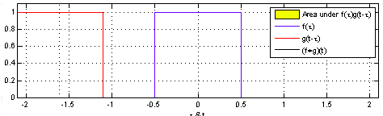
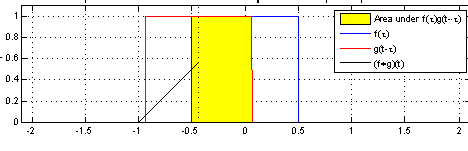
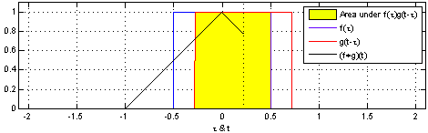
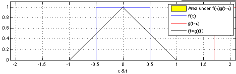
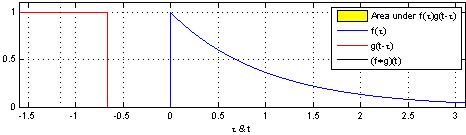
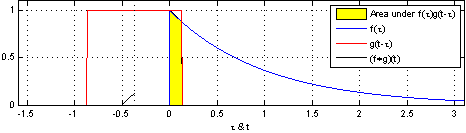
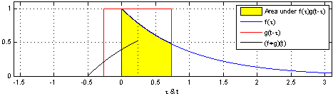
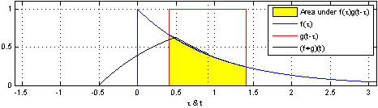

Evrişim iki fonksiyon \(f,g\) üzerinde tanımlı bir operasyondur, bu operasyon iki fonksiyondan üçüncü bir fonksiyon yaratır. Operasyon bir entegral üzerinden tanımlıdır, \(g\)'nin aynı görüntüsü / ters çevrilmiş halinin alınıp, soldan (negatif sonsuzluk) sağa doğru kaydırılırken \(f\) ile üst üste gelen bölgenin alanını her \(t\) için alınması durumudur, bu açıdan evrişim bir tür ağırlıklı ortalama olarak görülebilir, \(f\)'in ağırlıklı ortalaması \(g\) üzerinden alınmaktadır. Matematiksel olarak,
\[f * g \equiv \int_{-\infty}^{\infty} f(\tau)g(t-\tau) \mathrm{d}\tau \]
Evrişim sırabağımsızdır, yani \(f * g = g * f\), o zaman
\[f * g \equiv \int_{-\infty}^{\infty} f(t-\tau)g(\tau) \mathrm{d}\tau \]
ifadesi de doğrudur. Örnek \(f,g\) üzerine görelim,
Her iki fonksiyonu bir geçici değişken \(\tau\) üzerinden tanımlayabiliriz, Sonra \(g\)'nin ayna görüntüsünü alırız, \(g(\tau) \to g(-\tau)\)
Şimdi bir zaman kaydırma faktörü \(t\) ekleyebiliriz, bir \(g(t-\tau)\) elde ederiz, bunun etkisi her \(t\) için \(g\)'yi istediğimiz noktaya kaydırabilmektir. Bunu yaparken, mesela negatif sonsuzluktan pozitif sonsuzluğa kaydırırken, her \(t\) anında alınan entegralin sonuçları bize evrişimi verir. Dikkat, kaydırma entegralin sonucu değil, sadece "her \(t\) için'' vurgusu amacıyla bu kaydırma görüntüsü veriliyor, her \(t\) noktasında, kaydırma nereye olursa olsun, \(-\infty,\infty\) arasında entegral alınmaktadır.
Ayrıksal olarak,
\[ (f * g) [n] \equiv \sum_{m=-\infty}^{\infty} f[m] g[n-m] \]
Farklı fonksiyonlar üzerinde görelim, mesela kare fonksiyonunu kendisiyle evrişimi, \(f\) mavi, \(g\) kırmızı, sarı bölgeler çakışma olan yerler, \(g\)'nin her \(t\) için evrişim entegral sonucu ise siyah çizgi ile gösteriliyor,
 
 
Şimdi \(f\) kavisli bir fonksiyon, \(g\) hala kare,
 
 
Evrişim ile çapraz korelasyon (cross-correlation) arasında bağlantılar var, \(t-\tau\) yerine \(t+\tau\) kullanılırsa çapraz korelasyon elde ediliyor.
Örnek
import scipy.signal
f = [1,2,3,4,5,6]
g = [5,4,3,2,1]
print scipy.signal.convolve(a,b)[ 5 14 26 40 55 70 50 32 17 6]\(X+Y\) Dağılımı
Çoğu zaman \(X,Y\)'in bağımsız olduğu durumda bu rasgele değişkenlerin toplamının dağılımını hesaplamak gerekir [2, sf 56]. Kümülatif fonksiyon \(F\) ile
\[ F_{Z+Y} = P(X+Y \le a) \]
\[ = \int \int_{x+y \le a}^{} f(x)g(y) \mathrm{d} x \mathrm{d} y \]
\(f(x)g(y)\) kullanabildik çünkü \(X,Y\) bağımsız. Alt sınırda bir değişiklik yapalım, \(x+y \le a\), o zaman \(x \le a-y\). Demek ki
\[ = \int_{-\infty}^{\infty} \int_{-\infty}^{a-y} f(x)g(y) \mathrm{d} x \mathrm{d} y \]
Entegralleri gruplayabiliriz,
\[ = \int_{-\infty}^{\infty} \bigg[ \int_{-\infty}^{a-y} f(x) \mathrm{d} x \bigg] g(y) \mathrm{d} y \]
\[ = \int_{-\infty}^{\infty} F_X(a-y) g(y) \mathrm{d} y \]
Yoğunluğu almak için kümülatif fonksiyonun türevini alırsak,
\[ f_{X+Y}(a) = \frac{d}{da} \int_{-\infty}^{\infty} F_X(a-y) g(y) \mathrm{d} y \]
\[ = \int_{-\infty}^{\infty} \frac{d}{da} F_X(a-y) g(y) \mathrm{d} y \]
\[ = \int_{-\infty}^{\infty} f_X(a-y) g(y) \mathrm{d} y \]
Üstteki ifade bir evrişim operasyonu! Yani iki bağımsız rasgele değişkenin toplamının yoğunluğu, değişkenlerin yoğunluklarının evrişimine eşittir!
[1, sf. 365]'de ayrıksal olarak üstteki hesaba değiniliyor, elde iki zar var, zarın her yüzünün gelme ihtimali \(p_i=1/6\), bu iki zarın mümkün her türlü toplamının hesabı bir evrişim, \(p * p\),
import scipy.signal
d = 1/6. * np.array([1.0,1.0,1.0,1.0,1.0,1.0])
print scipy.signal.convolve(d,d)
print scipy.signal.convolve(d,d) * 36.[ 0.02777778 0.05555556 0.08333333 0.11111111 0.13888889 0.16666667
0.13888889 0.11111111 0.08333333 0.05555556 0.02777778]
[ 1. 2. 3. 4. 5. 6. 5. 4. 3. 2. 1.]Sonuca göre toplam 12 gelme ihtimali 1/36 (en baştaki), 11 gelme ihtimali 2/36, vs.
Ek bilgiler için bkz [4] notları.
Kaynaklar
[1] Strang, Computational Science and Engineering
[2] Wikipedia, Convolution, https://en.wikipedia.org/wiki/Convolution
[3] Ross, Introduction to Probability Models 10th Edition
[4] Bayramlı, Diferansiyel Denklemler, Ders 21